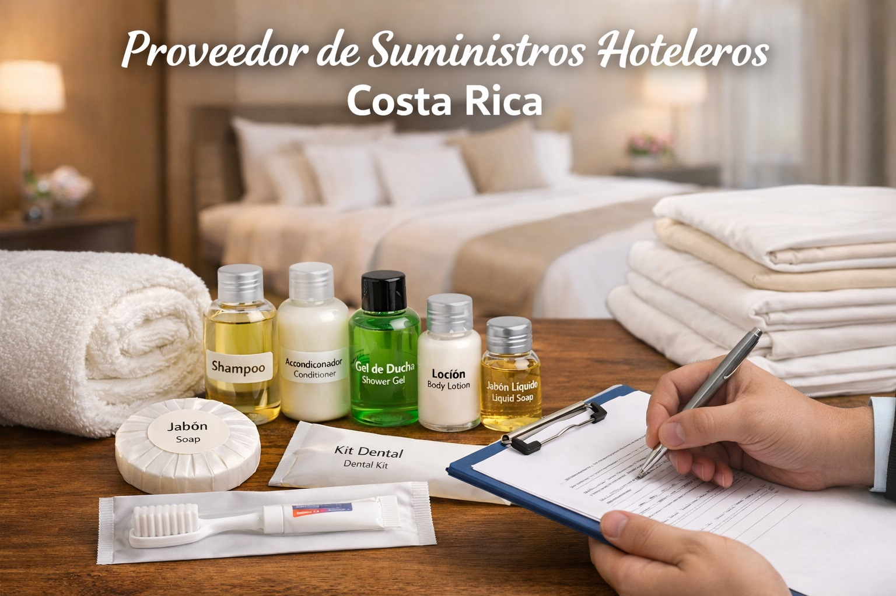

Los hoteles y alojamientos turísticos en Costa Rica necesitan proveedores confiables que puedan ofrecer productos de calidad a buen precio. Desde amenidades hasta ropa de cama y toallas, los suministros hoteleros son esenciales para brindar una buena experiencia a los huéspedes.
Hotel Suministros es un proveedor especializado en productos para hoteles, resorts y alojamientos tipo Airbnb en Costa Rica.
Ofrecemos una amplia gama de productos para el sector hotelero:
El turismo en Costa Rica sigue creciendo cada año. Por esta razón, hoteles, hostales y alojamientos tipo Airbnb necesitan proveedores confiables que puedan ofrecer productos de calidad con precios competitivos.
Trabajamos con fabricantes especializados para ofrecer productos diseñados específicamente para el sector hotelero.
Si estás buscando un proveedor de suministros para hoteles en Costa Rica, Hotel Suministros ofrece soluciones para hoteles, resorts, hostales y alojamientos turísticos.